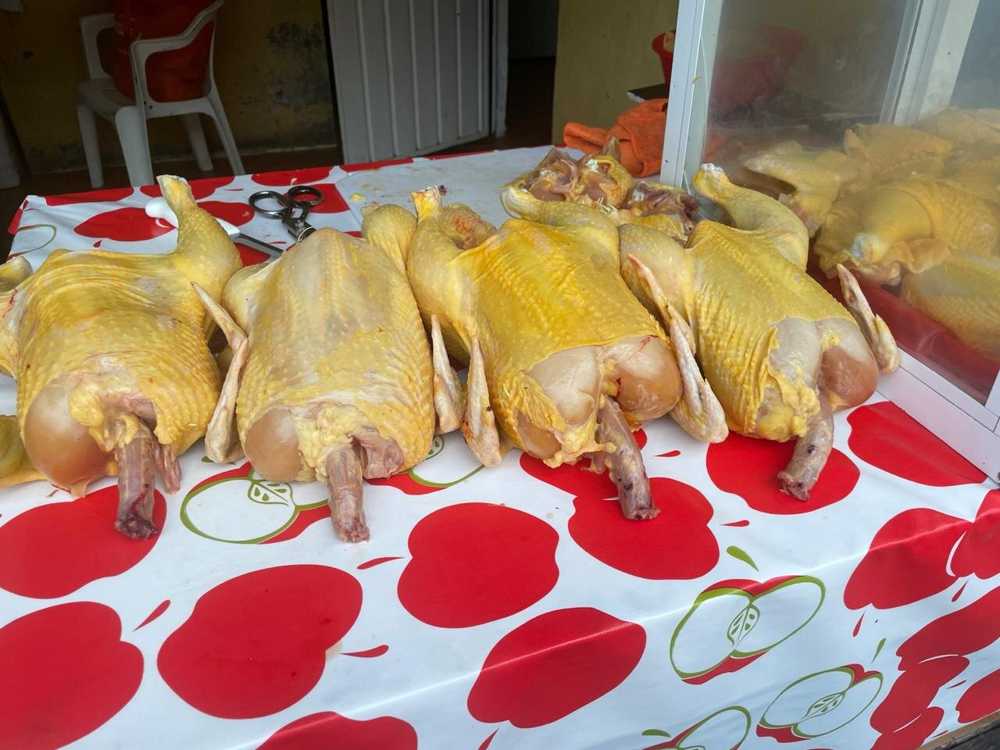
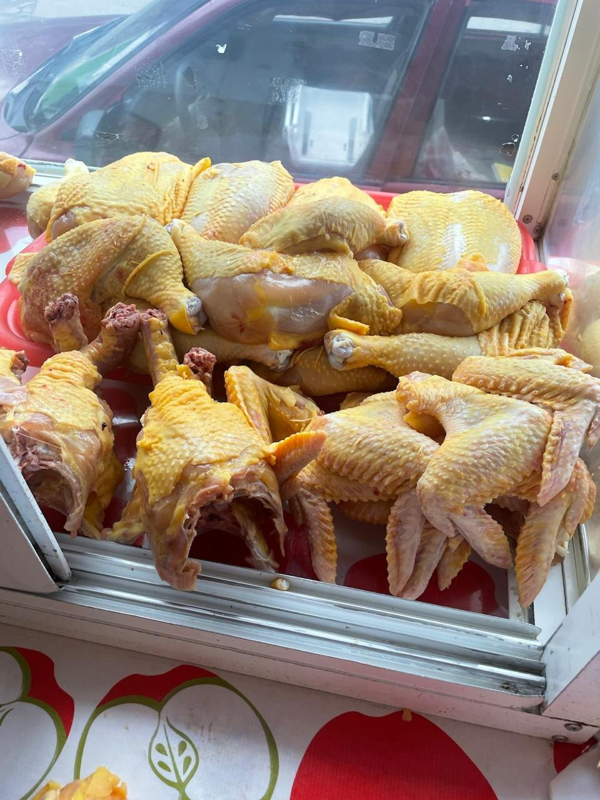
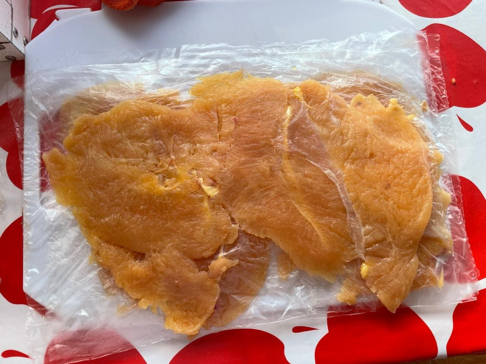
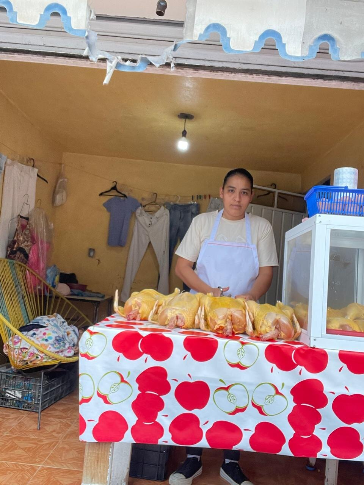
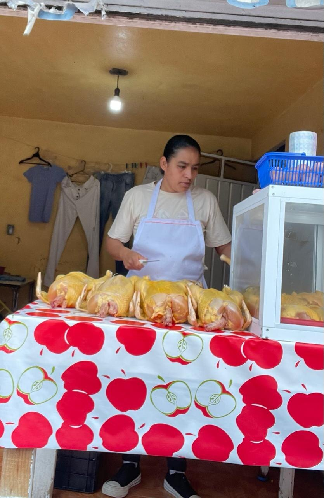

Pollo fresco del día
Todos los días recibimos y preparamos pollo fresco para que cocines con la tranquilidad de llevar calidad a tu hogar.
Pollería tradicional local
Pollería La Diez
Fresco todos los días, bien preparado y con la calidad que las familias de Ixtapan conocen y prefieren.

Lo que nos distingue

Todos los días recibimos y preparamos pollo fresco para que cocines con la tranquilidad de llevar calidad a tu hogar.
Cada pieza se prepara cuidadosamente de forma tradicional para conservar mejor su color, apariencia y frescura.

La frescura se nota a simple vista. Un pollo con mejor color, mejor apariencia y calidad que inspira confianza.

Atención amable y directa para que hagas tu pedido rápido y con la confianza de siempre.

¿Por qué elegirnos?
Sabemos que cuando compras pollo para tu familia buscas algo más que buen precio. Buscas frescura, limpieza y confianza.
Por eso en Pollería La Diez trabajamos todos los días para ofrecer pollo fresco, bien preparado y listo para llegar a tu cocina.
Hacer pedido por WhatsAppHorario
Visítanos temprano para encontrar pollo fresco del día.
Ubicación
Pedidos rápidos
Escríbenos por WhatsApp y aparta tu pedido antes de que se termine. Atención rápida y directa.